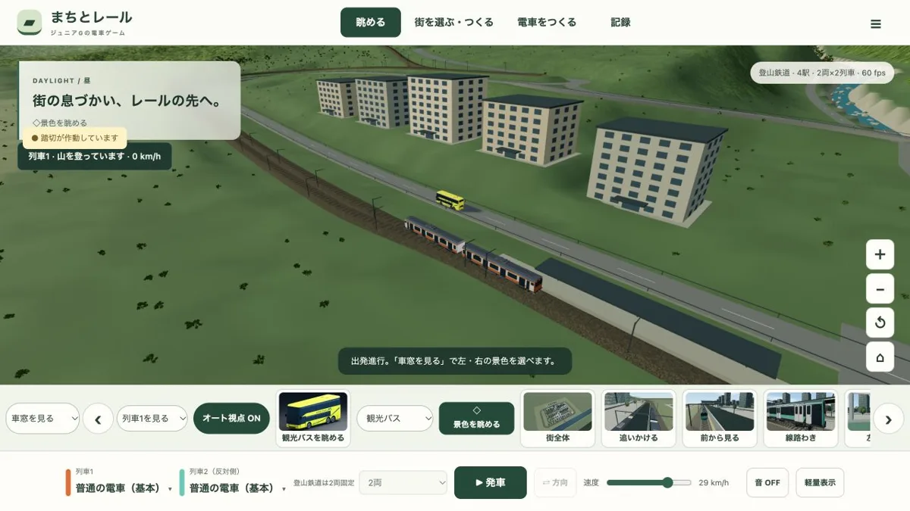

スイッチバックを楽しむ登山鉄道ゲーム
山あいの4駅を結ぶ登山鉄道。2両編成の電車が向きを変えながら山道を登ります。

折り返すところを観察する
「街を選ぶ・つくる」から「登山鉄道」を開いて発車します。麓を出て折り返し地点に着いたら、電車の進む向きに注目してください。スイッチバックでは前と後ろを入れ替えて、さらに高い場所へ登ります。
橋と駅で景色を変える
車窓を選ぶと線路に沿って斜面が迫り、オートの視点では電車と橋や踏切を一緒に眺められます。森の美術館前では、反対側を走る列車との行き違いも見どころです。
ゲームで試す →